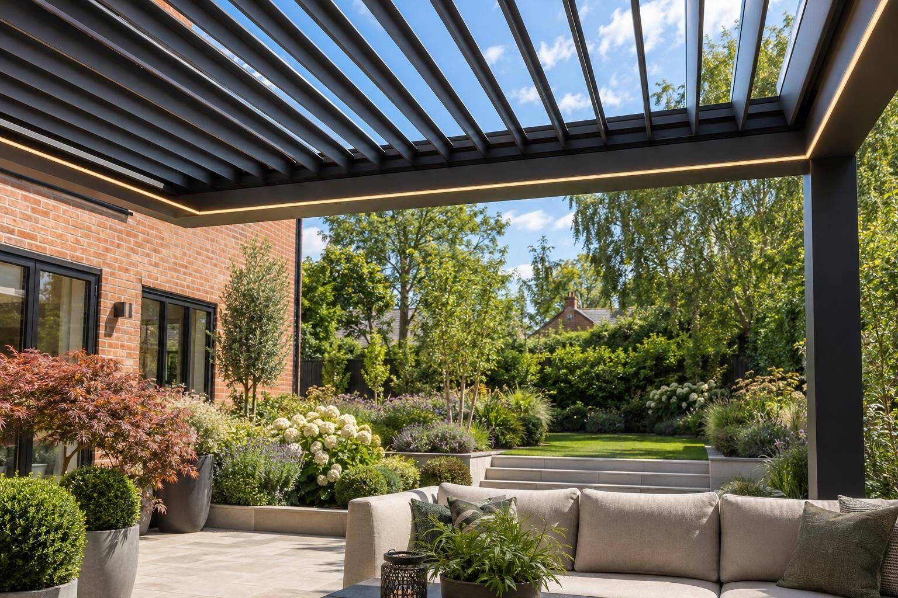

Garden lighting in Cottesmore
Practical garden lighting for Cottesmore family homes: lit paths, side passages and patios on timers or sensors, set into mixed limestone and clay ground.
A path, step and border lighting scheme in Cottesmore typically costs up to about £1,500 installed, and a full multi-zone garden scheme £2,000–£6,000 or more; a new outdoor circuit is priced separately. These are guides, with the fixed price in writing after the visit. Locally, the ground matters most: it varies between limestone and clay from plot to plot, so we test before laying ducts or buried lights.
- Full garden scheme
- £2,000–£6,000+
- Planning
- Not needed
- Ground
- Mixed limestone and clay
- Guarantee
- 5 years, in writing
Our 2026 guide prices. Your fixed price comes in writing after the site visit. Full breakdown: garden lighting cost guide.
Garden lighting in Cottesmore
Cottesmore is a large village with plenty of family homes, and the lighting most people ask for here is practical first. A lit path to the bins, a lit side passage, steps you can see when you come home late and a patio that is usable after the children are in bed. We design low-voltage schemes that do all of that and still look good: step and riser lights, uplighters on trees and walls, and soft light around seating. All prices on this page are guides, fixed in writing after we visit.
Many families here also want a lower-maintenance garden, and lighting fits naturally into that kind of redesign. When the lawn becomes a patio or the borders are rebuilt, ducts can go in at the same time. In the old centre, with its ironstone and limestone cottages, gardens are often smaller and enclosed, where two or three wall lights and one lit plant are enough. Timers, sensors or app control mean nobody has to remember to switch anything on or off.
What makes Cottesmore different
Cottesmore sits on mixed ground on the edge of the limestone, and drainage varies from plot to plot. One garden may drain freely and take buried uplighters easily, while the next holds water in clay. We dig a test hole on the visit and decide fitting types from what we find. The North Brook rises nearby and runs towards Empingham and Ryhall, so lower gardens get controls mounted high. Cottesmore has a conservation area over the historic village and no Article 4 direction.
A typical Cottesmore job is a family home with a rear garden being reworked to need less upkeep. The scheme lights the step from the back door, the side passage and path to the gate, and the new patio, with a sensor on the passage and a timer on the rest. Ducts go in while the patio is being built.
Sources: Rutland conservation areas · Rutland flood risk strategy.
Permissions in Cottesmore
- PlanningGarden lighting does not need planning permission, but a new outdoor mains circuit is notifiable electrical work, so it is done and certified by a registered electrician. Keep lights pointing down and away from neighbours' windows. Listed buildings and the Cottesmore conservation area have tighter rules, so we check your address before anything is designed.
- Design and priceWe measure up, check the ground and the planning position, and give you one fixed written price.
Rules checked October 2026.
What you get in Cottesmore
- Sensor lighting for side passages and paths to the bins
- Test hole on the visit to choose fittings for mixed ground
- Ducts laid with low-maintenance garden redesigns
- Low-voltage fittings that are cheap to run and safe in the garden
- Ducts laid with the patio so cables never sit under slabs
- Step, wall, tree and seating lights designed as one scheme
The specification
- Lighting plan agreed
- Ducts and junction boxes laid with the sub-base
- Transformers and fittings installed
- Circuit installed and certified by a registered electrician
- Scheme tested at dusk and adjusted
- Five year workmanship guarantee in writing

Rated 5.0 from 37 Google reviews
“Well what can I say about Rutland driveways that would make you seriously consider using them for your project I contacted them had a meeting with the team who was very informative with the level of inspiration I had ideas they had ideas and recommendations we bounced ideas to come up with the best option possible for my …”
Steven · Drive, walkway, patio and garden — Google review
“Guys have done an amazing job with my back garden very pleased with finished product very professional”
Kim · Back garden — Google review
Everything else we do here


Garden lighting in Cottesmore: questions
What will garden lighting cost in Cottesmore?
Is planning permission needed for garden lighting in Cottesmore?
Can the lights come on by themselves?
Our neighbour's ground drains well but ours is wet. Why?
Garden lighting nearby
Request a site visit in Cottesmore
We measure up, check levels and drainage, and send a written proposal with the build-up, the programme and one whole price. No pressure and no follow-up sales calls.